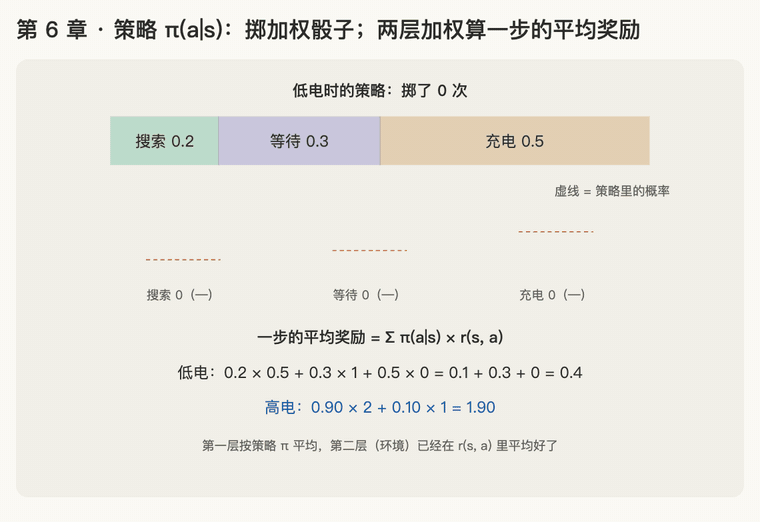
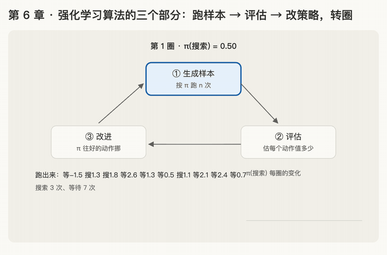

第 6 章 · 策略 policy π(a|s)：智能体的"行事手册"
本地运行
git clone https://github.com/wikieden/rl-from-scratch
cd rl-from-scratch/code/notebooks
pip install jupyterlab torch numpy
jupyter lab ch06_policy.ipynb也可以下载后直接用 VS Code 打开 .ipynb 运行。需要 GPU 的章节在 Colab 里选「代码执行程序 → 更改运行时类型 → GPU」。
本章回答：智能体是怎么选动作的？"策略"写出来长什么样？为什么策略常常是随机的？
讲解日期：2026-11-13 · 上一章：第 5 章 马尔可夫决策过程 · 下一章：第 7 章 价值函数
对应原文：Sutton & Barto §3.5 开头（L4234–L4250）；CS 285 第 4 讲（lec-04.txtL105–L166 算法的三个部分）
本章缩写：π：希腊字母 pi（读"派"），policy（策略）的首字母；\(\pi(a \mid s)\) 读"在状态 s 下选动作 a 的概率"；\(\mathbb{E}_\pi\)：下标 π 表示"按策略 π 行事时"的期望。全部缩写见 附录 · 缩写与术语表
讲解
第一步：策略 = 每种情况下，各个动作选几成（2026-11-13）
第 5 章讲的是环境怎么回应。现在轮到智能体这边：它怎么选动作？
类比：员工手册。 "客户投诉时：70% 的情况先道歉，30% 的情况直接转给经理。"手册按情况列出怎么做。
智能体的手册叫策略 policy，记作 π（L4241–L4244）：
扫地机器人的一份策略（讲义编的）：
| 状态 | 搜索 | 等待 | 充电 | 加起来 |
|---|---|---|---|---|
| 高电 | 0.9 | 0.1 | — | 1 |
| 低电 | 0.2 | 0.3 | 0.5 | 1 |
读法：\(\pi(\text{搜索} \mid \text{高电}) = 0.9\)，"高电时 90% 去搜索"。
和第 5 章的 p 长得像：竖线右边是已知情况，左边是要选的东西；每一行加起来都是 1。区别在于：
| p（第 5 章） | π（本章） | |
|---|---|---|
| 是谁的 | 环境的 | 智能体的 |
| 能不能改 | 不能（第 1 章第三步：改不了的是环境） | 能，学习就是在改它 |
| 回答什么 | 做了 a 以后会怎样 | 在 s 时该做什么 |
一句话：策略 \(\pi(a \mid s)\) 是智能体的行事手册：每个状态下各动作的概率；强化学习就是在不断改这本手册。
第二步：按策略选动作：掷一个"加权骰子"（2026-11-13）
问题：低电时，机器人具体怎么按 0.2 / 0.3 / 0.5 选？
做法：掷一个"加权骰子"，搜索占 2 成面积、等待 3 成、充电 5 成，落在哪就做哪个。用代码掷了 1000 次（附录）：
| 动作 | 概率 | 1000 次里选中 |
|---|---|---|
| 搜索 | 0.2 | 193 |
| 等待 | 0.3 | 280 |
| 充电 | 0.5 | 527 |
和概率差不多，次数越多越准（第 4 章第三步）。
两种策略：
- 随机策略 stochastic policy：像上面这样，按概率选；
- 确定性策略 deterministic policy：每个状态只选一个动作，概率是 1，其余是 0。例："高电必搜索，低电必充电。"确定性策略是随机策略的特例。
为什么要随机：
- 要试（第 1 章第二步）：总选同一个动作，就永远不知道别的动作好不好；
- 对手会猜：石头剪刀布，固定出石头必输；随机出才不会被看穿；
- 好学：概率可以一点点调（0.5 → 0.52），后面第 20 章的策略梯度就是这样一点点调出来的。
一句话：随机策略按概率掷骰子选动作；确定性策略每个状态只选一个；随机让智能体能试、不被猜、好调。
第三步：在策略下，下一步平均能拿多少奖励（2026-11-13）
问题：机器人现在高电，按上面的策略走一步，平均能拿多少奖励？
两层随机：先是智能体掷骰子选动作（π），再是环境掷骰子给结果（p）。第 5 章第四步已经把环境那一层算好了，就是 \(r(s, a)\)：
| 状态 | 动作 | 选它的概率 π | 选了以后平均奖励 r(s, a) |
|---|---|---|---|
| 高电 | 搜索 | 0.9 | 2 |
| 高电 | 等待 | 0.1 | 1 |
再按 π 加权一次（第 4 章：期望 = 值 × 概率再相加）：
低电时（\(r(\text{低电}, \text{搜索}) = 0.5\)，等待 1，充电 0）：
\(\mathbb{E}_\pi\) 的下标 π 就是在提醒：这个期望是"按策略 π 行事"时的平均，换一份策略，结果就变了。
这只是一步：1.9 和 0.4 只是"下一步"拿多少。低电时充电当下拿 0，但充满电以后能继续搜索拿 2。要把以后所有步都算进来，就是第 7 章的"价值"。
一句话：一步的平均奖励 = 先按 π 选动作、再按 p 给结果，两层加权；\(\mathbb{E}_\pi\) 表示"按 π 行事时的平均"。
第四步：强化学习算法的三个部分（2026-11-13）
现在有了四样东西：状态、动作、奖励、策略。CS 285 第 4 讲（lec-04.txt L105–L110）把所有强化学习算法都画成同一个循环：
① 生成样本：按现在的策略 π 去环境里跑，收集轨迹
↓
② 评估：算一算现在的策略好不好（拟合模型 / 估计回报）
↓
③ 改进：根据评估结果改策略 π
↓（回到 ①）
类比：学做菜。 ① 按现在的菜谱做一道菜；② 尝一尝，打个分；③ 改菜谱（盐少放一点）；再做一道。
后面的章节就是在讲 ② 和 ③ 各有哪些做法：
| 章 | ② 怎么评估 | ③ 怎么改进 |
|---|---|---|
| 7–9 | 价值函数 v、q | 挑价值最高的动作 |
| 10–12 | 知道 p 时直接算（动态规划） | 贪心改进 |
| 14–16 | 不知道 p，靠试出来的回报 | ε-greedy |
| 17–19 | 用神经网络估 q（DQN） | 挑 q 最大的 |
| 20–23 | 估回报或优势 | 沿梯度直接调 π 的参数 |
一句话：所有 RL 算法都是"跑样本 → 评估 → 改策略"转圈；后面各章只是 ② ③ 的做法不同。
动画演示：按策略掷加权骰子；两层随机算出一步的平均奖励

可交互版：animations/l06-policy.html（要能点按钮、拖滑块，需要用本地服务打开，见 animations/README.md"跑起来看"）。
怎么看：
- 上面是低电时的策略条：搜索 / 等待 / 充电各占一段，宽度就是概率；
- 每帧掷一次，指针落在哪段就选哪个动作，右边计数慢慢接近 2 : 3 : 5（第二步）；
- 下面是两层加权：π × r(s, a) 一项项乘出来再加（第三步）；
- 滑块调 π(搜索 | 高电)，看一步的平均奖励怎么变。
动画演示 2：跑样本 → 评估 → 改策略，一圈圈转（第四步）

可交互版：animations/l06b-rl-loop.html（滑块调"每圈跑几次"）
怎么看：
- 每帧亮一个框：① 按现在的 π 跑 n 次；② 用跑出来的奖励估两个动作各值多少；③ 把 π 往估得高的那个挪 0.1（第四步的三框图）。
- 例子是编的：一个状态、两个动作，搜索平均 +2、等待平均 +1，都带噪声。右下角的线是 π(搜索) 每圈的变化。
- 把 n 拖到 2：估计常常出错，π 会往错的方向挪几次。② 估得准不准，决定 ③ 改得对不对。
练习与作答记录
题 1：另一份策略：高电时搜索 0.5、等待 0.5。算高电时一步的平均奖励 \(\mathbb{E}_\pi[R_{t+1} \mid \text{高电}]\)。
作答：（待作答）
题 2：把"高电必搜索、低电必充电"写成 \(\pi(a \mid s)\) 的表格（每格填概率）。它是随机策略还是确定性策略？
作答：（待作答）
题 3：p 和 π 都写成"竖线"形式，哪一个是智能体能改的？学习过程改的是哪一个？
作答：（待作答）
口诀
策略是手册：每个状态各动作选几成，每行加起来是一；
随机策略掷骰子，确定策略只一招；
一步平均：先 π 后 p，两层加权；
跑样本、评估、改策略，所有算法都在转这个圈。
本章复习卡片
- R10（策略 \(\pi(a \mid s)\) 的读法；随机 vs 确定性；\(\mathbb{E}_\pi[R_{t+1} \mid s] = \sum_a \pi(a \mid s) r(s, a)\)）
附录 · 延伸阅读
留给以后深入学习用，不影响本章主线。★ 是建议先读的。L 行号指
materials/text/books/sutton-barto-RLbook2020.txt。
推荐阅读
| 读什么 | 读哪里 | 读它为了什么 |
|---|---|---|
| ★ Sutton & Barto §3.5 开头 | L4234–L4250 | 策略的定义；习题 3.11 就是第三步的公式 |
| ★ CS 285 第 4 讲 | lec-04.txt L105–L166（The anatomy of a reinforcement learning algorithm） |
三个部分的循环图（第四步） |
| CS 285 第 4 讲 | lec-04.txt L195–L207（Types of RL algorithms） |
按"② ③ 怎么做"给算法分类：value-based、policy gradient、actor-critic、model-based |
| Spinning Up "Key Concepts" | spinningup/docs/spinningup/rl_intro.rst 的 Policies 一节 |
深度 RL 里策略写成神经网络 \(\pi_\theta\)（第 20 章用） |
数学原理
- 策略是条件分布：\(\sum_a \pi(a \mid s) = 1\)，\(\pi(a \mid s) \ge 0\)。
- 两层期望（第 4 章全期望公式）：\(\mathbb{E}_\pi[R_{t+1} \mid S_t = s] = \sum_a \pi(a \mid s) \sum_{s', r} r\,p(s', r \mid s, a)\)；先按 π 分组，再按 p 平均。
- 确定性策略：写成 \(a = \mu(s)\) 或 \(\pi(s)\)，相当于 π 在一个动作上概率为 1。
- 参数化策略（预告第 20 章）：\(\pi_\theta(a \mid s) = \text{softmax}(\theta)\)，用 Transformer 讲义第 6 章的 softmax 把一组分数变成概率。
公式清单
| 公式 | 意思 |
|---|---|
| \(\pi(a \mid s) = \Pr\{A_t = a \mid S_t = s\}\) | 策略 |
| \(\sum_a \pi(a \mid s) = 1\) | 每行加起来是 1 |
| \(\mathbb{E}_\pi[R_{t+1} \mid S_t = s] = \sum_a \pi(a \mid s)\,r(s, a)\) | 一步的平均奖励（习题 3.11） |
代码对照：把本章的数字用代码算一遍
代码在
cs285-deep-rl/solutions/chapter-code/ch06_policy.py，策略在rl_envs.py的ROBOT_PI，测试tests/test_ch05_09.py。
同一章的 Jupyter notebook：cs285-deep-rl/solutions/chapter-code/notebooks/ch06_policy.ipynb（讲解和代码放在一起，一格一格边读边跑；代码都写在格子里，Colab 也能直接打开）。
bash cd cs285-deep-rl/solutions/chapter-code uv run python ch06_policy.py
| 讲义 | 代码 | 跑出来 |
|---|---|---|
| 策略表 | ROBOT_PI = {0: {0: 0.9, 1: 0.1}, 1: {0: 0.2, 1: 0.3, 2: 0.5}} |
— |
| 掷 1000 次 | sample_action(pi, 1, rng) |
搜索 193、等待 280、充电 527 |
| 一步平均奖励 | expected_immediate_reward(P, pi, s) |
高电 1.9，低电 0.4 |
关键几行：
acts = list(pi[s])
a = acts[rng.choice(len(acts), p=[pi[s][a] for a in acts])] # 加权骰子
sum(pi[s][a] * expected_reward(P, s, a) for a in pi[s]) # 先 π 后 p
代码里才看得到的：rng.choice(n, p=...) 就是"加权骰子"。神经网络策略（第 20 章）里同样的事写成 torch.distributions.Categorical(probs).sample()。
自己改一改（不影响练习答案）：
sample_action(pi, 1, rng)只掷 10 次，换几个种子：每次数出来的比例都和 0.2 / 0.3 / 0.5 差得很远；掷 10000 次时就很接近了。- 把
ROBOT_PI里低电的策略改成搜索 0.6、等待 0.2、充电 0.2，再算expected_immediate_reward(P, pi, 1)，看平均奖励是变大还是变小，想一想为什么。